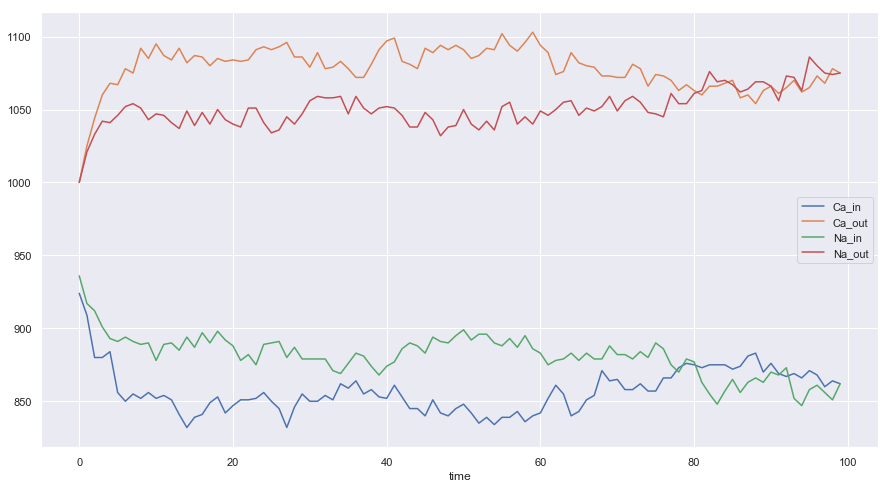
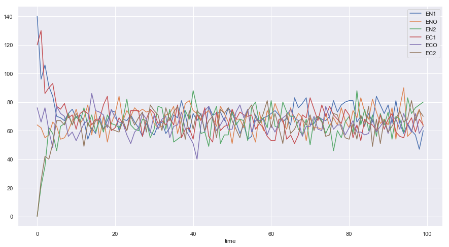
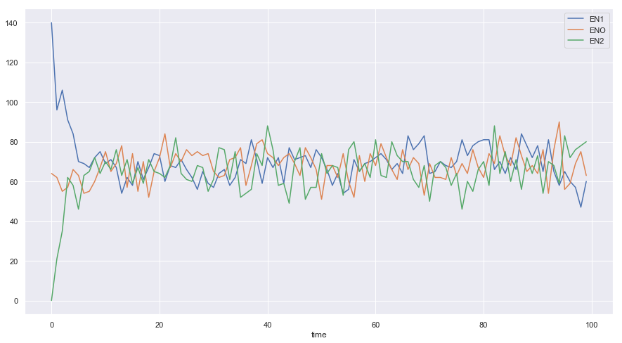

NCX Simulation Model
import numpy as np import matplotlib.pyplot as plt import seaborn as sns sns.set() %matplotlib inline import random as random import pandas as pd
Parameters
K_EN1_ENO = 0.33 K_ENO_EN1 = 0.33 K_ENO_EN2 = 0.33 K_EN2_ENO = 0.33 K_EC1_ECO = 0.33 K_ECO_EC1 = 0.33 K_ECO_EC2 = 0.33 K_EC2_ECO = 0.33
Weighted Probability Vector
M = {"EN1": [1 - K_EN1_ENO,K_EN1_ENO,0,0,0,0], "ENO": [K_ENO_EN1, 1-K_ENO_EN1-K_ENO_EN2,K_ENO_EN2,0,0,0], "EN2": [0, K_EN2_ENO, 1-K_EN2_ENO,0,0,0], "EC1": [0,0,0,1-K_EC1_ECO,K_EC1_ECO,0], "ECO": [0,0,0,K_ECO_EC1,1-K_ECO_EC1-K_ECO_EC2,K_ECO_EC2], "EC2": [0,0,0,0,K_EC2_ECO,1-K_EC2_ECO]}
M
{'EN1': [0.6699999999999999, 0.33, 0, 0, 0, 0],
'ENO': [0.33, 0.3399999999999999, 0.33, 0, 0, 0],
'EN2': [0, 0.33, 0.6699999999999999, 0, 0, 0],
'EC1': [0, 0, 0, 0.6699999999999999, 0.33, 0],
'ECO': [0, 0, 0, 0.33, 0.3399999999999999, 0.33],
'EC2': [0, 0, 0, 0, 0.33, 0.6699999999999999]}
class Channel(object): '''This class represents a ncx channel''' def __init__(self,state,x,y): self.x = x self.y = y self.states = ["EN1","ENO","EN2","EC1","ECO", "EC2"] self.state = state def update(self,M): '''Update the state based on markov model''' new_state = np.random.choice(self.states, p = M[self.state]) self.state = new_state def flip(self): if self.state in ["EN1","EC1"]: self.state = random.choice(["EN1","EC1"]) elif self.state in ["EN2","EC2"]: self.state = random.choice(["EN2","EC2"])
class System(object): '''This class represents a 2D lattice system of NCX channels''' def __init__(self,Channel,M): '''lattice dimension''' self.Lx = 20 self.Ly = 20 '''Markov transition matrix''' self.M = M '''A single channel object''' self.Channel = Channel '''concentration of ions''' self.nNa_out = 1000 self.nCa_out = 1000 self.nNa_in = 1000 self.nCa_in = 1000 self.nNa_o = 0 self.nCa_o = 0 '''concentration of channels''' self.nEN1 = 0 self.nENO = 0 self.nEN2 = 0 self.nEC1 = 0 self.nECO = 0 self.nEC2 = 0 '''Initiation channel 2D system''' self.U = [["o" for i in range(self.Lx)]for j in range(self.Ly)] self.DATA =[] def start(self): for i in range(self.Lx): for j in range(self.Ly): r_state = random.choice(["EC1","EN1"]) self.U[i][j] = self.Channel(r_state,i,j) if r_state == "EN1": self.nEN1 += 1 if r_state == "ENO": self.nENO += 1 self.nNa_o +=3 if r_state == "EN2": self.nEN2 += 1 if r_state == "EC1": self.nEC1 += 1 if r_state == "ECO": self.nECO += 1 self.nCa_o += 1 if r_state == "EC2": self.nEC2 += 1 def run(self, verbose = False): for i in range(self.Lx): for j in range(self.Ly): new_state = None old_state = None channel = self.U[i][j] old_state = channel.state '''generate the next markov state''' channel.update(self.M) new_state = channel.state if new_state != old_state: if verbose: print("updated from", old_state, " to ", new_state,\ " at ", channel.x, channel.y) '''update the ion concentration''' if new_state == "EN1" and old_state == "ENO": self.nNa_in += 1 self.nNa_o -= 1 self.nEN1 += 1 self.nENO -= 1 elif new_state == "ENO" and old_state == "EN1": self.nENO += 1 self.nEN1 -= 1 self.nNa_o += 1 self.nNa_in -= 1 elif new_state == "ENO" and old_state =="EN2": self.nENO += 1 self.nEN2 -= 1 self.nNa_o += 1 self.nNa_out -= 1 elif new_state == "EN2" and old_state == "ENO": self.nNa_out += 1 self.nNa_o -= 1 self.nEN2 += 1 self.nENO -= 1 elif new_state == "EC1" and old_state == "ECO": self.nCa_in += 1 self.nCa_o -= 1 self.nEC1 += 1 self.nECO -= 1 elif new_state == "ECO" and old_state == "EC1": self.nECO += 1 self.nEC1 -= 1 self.nCa_o += 1 self.nCa_in -= 1 elif new_state == "ECO" and old_state =="EC2": self.nECO += 1 self.nEC2 -= 1 self.nCa_o += 1 self.nCa_out -= 1 elif new_state == "EC2" and old_state == "ECO": self.nCa_out += 1 self.nCa_o -= 1 self.nEC2 += 1 self.nECO -= 1 else: if verbose: print("not updated"," old is ", old_state,\ " new is ",new_state,\ "at", channel.x, channel.y) if channel.state in ["EN1","EN2","EC1","EC2"]: channel.flip() fliped_state = channel.state if verbose: print("Flipped from ", new_state, " to ", fliped_state) if new_state == "EN1": if fliped_state == "EC1": self.nEN1 -= 1 self.nEC1 += 1 elif new_state == "EN2": if fliped_state == "EC2": self.nEN2 -= 1 self.nEC2 += 1 elif new_state == "EC1": if fliped_state == "EN1": self.nEC1 -= 1 self.nEN1 += 1 elif new_state == "EC2": if fliped_state == "EN2": self.nEC2 -= 1 self.nEN2 += 1 self.U[i][j] = channel def simulate(self,T): self.DATA =[] for t in range(T): self.run() self.DATA.append({"time" : t,\ "EN1": self.nEN1,\ "ENO": self.nENO,\ "EN2": self.nEN2,\ "EC1": self.nEC1,\ "EC2": self.nEC2,\ "ECO": self.nECO,\ "Na_out": self.nNa_out,\ "Na_in": self.nNa_in,\ "Na_occ": self.nNa_o,\ "CA_occ": self.nCa_o,\ "Ca_in": self.nCa_in,\ "Ca_out": self.nCa_out})
Simulation
S = System(Channel,M) S.start() S.simulate(T=100)
DataFrame
DF = pd.DataFrame(S.DATA) DF.head(5)
| CA_occ | Ca_in | Ca_out | EC1 | EC2 | ECO | EN1 | EN2 | ENO | Na_in | Na_occ | Na_out | time | |
|---|---|---|---|---|---|---|---|---|---|---|---|---|---|
| 0 | 76 | 924 | 1000 | 120 | 0 | 76 | 140 | 0 | 64 | 936 | 64 | 1000 | 0 |
| 1 | 66 | 909 | 1025 | 130 | 25 | 66 | 96 | 21 | 62 | 917 | 62 | 1021 | 1 |
| 2 | 76 | 880 | 1044 | 86 | 42 | 76 | 106 | 35 | 55 | 912 | 55 | 1033 | 2 |
| 3 | 60 | 880 | 1060 | 90 | 40 | 60 | 91 | 62 | 57 | 901 | 57 | 1042 | 3 |
| 4 | 48 | 884 | 1068 | 93 | 51 | 48 | 84 | 58 | 66 | 893 | 66 | 1041 | 4 |
Results
DF.plot(x = "time", y =["Ca_in","Ca_out","Na_in","Na_out"],figsize = [15,8])
<matplotlib.axes._subplots.AxesSubplot at 0x10b259f60>

DF.plot(x = "time", y =["EN1","ENO","EN2","EC1","ECO","EC2"],figsize = [15,8])
<matplotlib.axes._subplots.AxesSubplot at 0x1a1da2dba8>

DF.plot(x = "time", y =["EN1","ENO","EN2"],figsize = [15,8])
<matplotlib.axes._subplots.AxesSubplot at 0x1a1dd50390>

DF.plot(x = "time", y =["EC1","ECO","EC2"],figsize = [15,8])
<matplotlib.axes._subplots.AxesSubplot at 0x1a1d9a76d8>

Markov Chain
C = Channel("EN1",2,2) print(C.state) for i in range(10): C.update(M) print(C.state) C.flip() print(C.state)
EN1 ENO ENO ENO ENO ENO ENO EN1 EC1 EC1 EN1 ENO ENO EN2 EC2 ECO ECO EC2 EN2 EN2 EC2